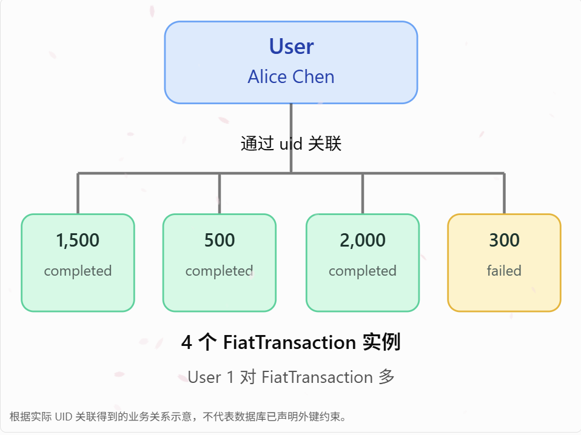
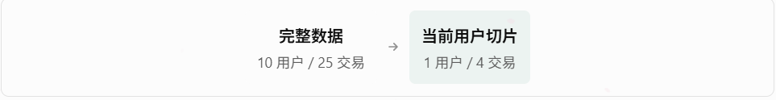

* DuckDB Tutorial
** Overview
*** 学习规则
一次只学一个概念，执行一条简单 SQL，看到真实结果，再进入下一步。
*** Roadmap
**** 认识对象
从真实的 users 表理解什么是实体、实例、属性。不创建图谱。
**** 认识关系
检查 users 和 fiat_transactions 是否通过真实字段建立关联。
**** 认识切片
根据一个真实业务问题，只提取有关的用户、交易和关系。
**** 动态展示
将真实 SQL 查询结果绘制为局部知识图谱，修改问题后重新计算。
** Content
*** 后续课程目录（第五至第十八课）
以下课程沿用本文前四步和已导入的真实数据。每次只执行所需查询；不修改原始业务表。第五课的浏览器交互尚需在实际 Editor Pro 中单独验收。
| 阶段 | 课程 | 本阶段验收 |
|------+------|------------|
| 一：切片与投影 | Step 5–6 | 真实查询生成可追溯的图、表与指标 |
| 二：正式建模 | Step 7–10 | 对象、属性、关系、映射有明确契约 |
| 三：实例与多源 | Step 11–13 | 实例数量与真实记录一致，不重复聚合 |
| 四：任务驱动 | Step 14–16 | 按任务切片并投影，标明风险判断边界 |
| 五：工程验证 | Step 17–18 | 行动只读演示，差异与规则可追溯 |
*** 导入数据
引用这个 [[file:exchange_funds_flow_dataset.xlsx][数据集]]，主要包含四张表，包括 users, fiat_transactions, crypto_transactions, exchange_rates.
**** 校验数据
1. 目的: 检查四张指定的数据表是否存在
2. 注意: information_schema.tables 是 DuckDB 的系统目录视图，用来查询当前连接可见的表和视图信息。
SELECT
table_schema, -- 数据表所属的 Schema，例如 main
TABLE_NAME -- 数据表名称
FROM information_schema.tables
WHERE table_name IN (
'users', -- 用户表
'fiat_transactions', -- 法币交易表
'crypto_transactions', -- 加密货币交易表
'exchange_rates' -- 汇率表
)
ORDER BY TABLE_NAME; -- 按表名排序
*** 练习过程
**** Step 1 认识对象
理解：数据库里的 users，为什么可以成为本体中的 User 对象？
目标：从真实数据中识别候选业务对象。不让 AI 凭空创建对象。
***** 本体建模
1. 检查实际字段，确认每行是否代表一个用户。确认后，将每行映射为一个 `User` 实例，将字段映射为属性。
2. 注意这只是本体建模的第一步。数据库表不等于本体。
****** 查看用户表
SELECT * FROM main.users LIMIT 3;
[[file:../../../../Org/images/2026-10-11-21_04_24-duckdb_tutorial_duckdb_tutorial_content_导入数据_查看用户表.png]]
***** 简单指标
SELECT
COUNT(*) AS user_count
FROM main.users;
**** Step 2 认识关系
理解如何证明用户与其交易存在关联。
***** 找表与表之间的关联
执行下面的代码，看两张表是否都存在 uid 字段。
****** user 表
-- 查看用户 UID 和用户名
SELECT
uid,
user_name
FROM main.users
LIMIT 2;
****** fiat 转账表
-- 查看交易属于哪个 UID
SELECT
fiat_order_id,
uid,
amount,
status
FROM main.fiat_transactions
LIMIT 2;
***** 查询对象（对象表）的业务行为（关系表）
例如，我们要查询用户 Alice Chen 的法币交易记录。对应的 SQL 操作是查找 UID 为 "784231905" 的法币交易。
SELECT
u.user_name, -- 用户名称
f.fiat_order_id, -- 法币订单号
f.amount, -- 交易金额
f.status -- 交易状态
FROM main.users AS u
-- 通过共同的 uid 建立关联
JOIN main.fiat_transactions AS f
ON CAST(u.uid AS VARCHAR) = CAST(f.uid AS VARCHAR)
-- 只查询指定用户
WHERE
CAST(u.uid AS VARCHAR) = '784231905'
-- 按订单号排列
ORDER BY
f.fiat_order_id;
使用 CAST，因为源工作簿的两张表中，UID 分别呈现为文本值和数值。等确认 DuckDB 实际导入类型后，可以统一为更合适的关联类型。更多可以参见 [[file:duckdb-keywords-cast.org][关键字 CAST：类型转换与表关联]]。
***** 研究本体
现在我们发现了一个可验证的事实：一个 用户(User) 可以关联多条 法币转账(FiatTransaction)。它们之间的关系很明显就是一对多。
[[file:../../../../Org/images/2026-10-11-23_24_14-duckdb_tutorial_duckdb_tutorial_content_练习过程_step_2_认识关系_研究本体.png]]
***** 本节学会了什么？
| 本体概念 | 对应内容 |
|----------+-------------------------------------|
| 对象类型 | =User, =FiatTransaction= |
| 对象实例 | Alice Chen 的用户记录、具体交易订单 |
| 对象属性 | =UID, =amount, =status= |
| 对象关系 | 用户拥有交易记录 |
**** Step 3 认识切片
从一个用户理解业务关系，并用 SQL 构建局部图谱。从真实 Excel 数据中，找到 Alice Chen 和她的所有法币交易，并把关联结果变成一张小图。
***** 先找到人
SELECT
uid, -- 用户唯一编号
user_name -- 用户姓名
FROM main.users
WHERE user_name = 'Alice Chen';
这里学到的概念：对象。Alice Chen 是一个真实的 User 对象实例，uid 是识别她的编号。
***** 找到她的全部交易
-- 根据 UID 关联用户和法币交易
SELECT
u.user_name, -- 用户姓名
f.fiat_order_id, -- 交易订单号
f.amount, -- 交易金额
f.status -- 交易状态
FROM main.users AS u
JOIN main.fiat_transactions AS f
ON CAST(u.uid AS VARCHAR) =
CAST(f.uid AS VARCHAR)
WHERE CAST(u.uid AS VARCHAR) = '784231905'
ORDER BY f.fiat_order_id;
这里学到的概念：关系。
JOIN 利用两张表共有的 uid，证明 Alice Chen 关联了这四笔交易。
***** 构建局部图谱
-- 提取 Alice Chen 的局部图谱关系
SELECT
'User:' || CAST(u.uid AS VARCHAR)
AS source_node, -- 起点：用户
'HAS_TRANSACTION'
AS relation_type, -- 关系：拥有交易
'FiatTransaction:' || f.fiat_order_id
AS target_node -- 终点：法币交易
FROM main.users AS u
JOIN main.fiat_transactions AS f
ON CAST(u.uid AS VARCHAR) =
CAST(f.uid AS VARCHAR)
WHERE CAST(u.uid AS VARCHAR) = '784231905'
ORDER BY f.fiat_order_id;
***** 本节学会了什么？
| 概念 | 真实操作 |
|------------------------+------------------------------------|
| 对象（Entity） | 找到 Alice Chen |
| 关系（Relation） | 通过 UID 找到四笔交易 |
| 本体切片（Slicing） | 只提取 Alice Chen 相关的节点和边 |
| 任务投影（Projection） | 将查询结果表示为绘图所需的节点和边 |
严格来说，本节完成的是基于真实关系数据的局部子图查询。
**** Step 4 动态展示
只改一个用户名，DuckDB 就自动找到这个用户和他的所有法币交易。
***** 执行一条 SQL
-- 第一步：输入要研究的用户名
WITH target AS (
SELECT 'Alice Chen' AS user_name
)
-- 第二步：提取用户与交易之间的关系
SELECT
u.user_name AS user_node, -- 用户节点
'HAS_TRANSACTION' AS relation, -- 关系类型
f.fiat_order_id AS trade_node, -- 交易节点
f.amount, -- 金额
f.status -- 交易状态
FROM main.users AS u
-- 第三步：通过 UID 找到真实关联交易
JOIN main.fiat_transactions AS f
ON CAST(u.uid AS VARCHAR) =
CAST(f.uid AS VARCHAR)
-- 第四步：只保留指定用户的数据
WHERE u.user_name = (
SELECT user_name FROM target
)
ORDER BY f.fiat_order_id;
只需要理解两个关键动作： target 告诉 DuckDB 当前研究谁；JOIN 找到属于这个用户的所有交易。
***** 现在只改一个地方
把 SQL 第三行：
SELECT 'Alice Chen' AS user_name
改成
SELECT 'Bob Miller' AS user_name
其他内容完全不动，再运行一次。你会发现：SQL 的关联规则没有变，只是当前研究的用户变了。
***** 这跟本体切片有什么关系？
[[file:../../../../Org/images/2026-10-12-01_46_45-duckdb_ontology_slicing_tutorial_duckdb_tutorial_content_练习过程_step_4_动态展示_这跟本体切片有什么关系.png]]
完整数据始终保留。我们只是根据当前用户，挑选相关对象和关系。严格来说，这仍是基于 SQL 的局部子图查询，还不是自动语义本体切片系统。
以上为前四课内容。继续执行 Step 5 至 Step 18，每课均按真实 SQL 的结果验收。
**** Step 5 真实查询驱动交互式局部图谱
目标：用输入的用户名重新查询真实 DuckDB，返回用户、交易和关系。图必须来自本次结果，不能使用静态节点或 Mock。
说明：第四课只是改变 SQL 筛选条件。第五课增加完整性处理：LEFT JOIN 保留没有交易的用户；前端将每一行转换为 User 节点、FiatTransaction 节点和 HAS_TRANSACTION 边。图形布局只是展示规则，不是新的业务事实。
***** 查询节点与关系（复制运行）
-- 把目标姓名改成其他真实姓名，再执行整条 SQL
WITH target AS (
SELECT 'Alice Chen' AS user_name
)
SELECT
CAST(u.uid AS VARCHAR) AS uid,
u.user_name,
CASE WHEN f.fiat_order_id IS NOT NULL
THEN 'HAS_TRANSACTION' ELSE NULL END AS relation,
CAST(f.fiat_order_id AS VARCHAR) AS fiat_order_id,
CAST(f.amount AS DOUBLE) AS amount,
CAST(f.currency AS VARCHAR) AS currency,
CAST(f.status AS VARCHAR) AS status
FROM main.users u
LEFT JOIN main.fiat_transactions f
ON TRY_CAST(u.uid AS BIGINT) = TRY_CAST(f.uid AS BIGINT)
WHERE u.user_name = (SELECT user_name FROM target)
ORDER BY f.fiat_order_id NULLS LAST;
结果解释：每一行同时保留 User 身份与可能存在的交易。uid 和 fiat_order_id 是节点的稳定标识。Jonas Weber 即使无交易也应返回一条用户行，订单号为 NULL。
***** 验收条件
Alice Chen 应有 1 个用户节点、4 个交易节点、4 条边；Bob Miller 也是 1+4+4；Jonas Weber 为 1+0+0；不存在的姓名为 0+0+0。逐项核对真实 SQL 结果，不把预期写死到渲染数据中。
***** 适用边界
只有查询返回交易订单号时才创建交易节点和关系边。修改用户名应清空旧图、取消旧查询结果的写入，点击节点展示本次 SQL 返回的 UID、订单号、金额、币种及状态。浏览器交互必须在实际 Editor Pro 中另行验收；SQL 通过不代表 UI 已验收。
**** Step 6 本体投影：同一切片的三种视图
目标：理解切片决定取哪些事实，投影决定如何组织事实；用 Alice Chen 的真实交易生成关系、明细、指标三种视图。
说明：不能把投影当成数据修改。关系投影保留 source、relation、target；明细投影显示订单和状态；指标投影先按币种分组，单独处理失败、待处理记录。
***** 关系投影：生成边列表
-- 一行对应一条实际关联边；没有交易时没有边
SELECT
'User:' || CAST(u.uid AS VARCHAR) AS source_node,
'HAS_TRANSACTION' AS relation_type,
'FiatTransaction:' || CAST(f.fiat_order_id AS VARCHAR) AS target_node
FROM main.users u
JOIN main.fiat_transactions f
ON TRY_CAST(u.uid AS BIGINT) = TRY_CAST(f.uid AS BIGINT)
WHERE u.user_name = 'Alice Chen'
ORDER BY f.fiat_order_id;
结果解释：预期四条边。所有目标订单号都必须来自原表，不能补造节点。
***** 明细投影：保留每笔交易
SELECT
f.fiat_order_id, f.direction, f.currency,
f.amount, f.fee, f.status
FROM main.users u
JOIN main.fiat_transactions f
ON TRY_CAST(u.uid AS BIGINT) = TRY_CAST(f.uid AS BIGINT)
WHERE u.user_name = 'Alice Chen'
ORDER BY f.fiat_order_id;
结果解释：预期四行。包括 300 EUR 的 failed withdrawal；不能因为失败而从关系视图中删除。
***** 指标投影：先定义状态与币种口径
SELECT
f.currency,
COUNT(*) AS all_orders,
COUNT(*) FILTER (WHERE f.status = 'completed') AS completed_orders,
SUM(CASE WHEN f.direction = 'deposit'
AND f.status = 'completed'
THEN f.amount ELSE 0 END) AS completed_deposits,
SUM(CASE WHEN f.direction = 'withdrawal'
AND f.status = 'completed'
THEN f.amount ELSE 0 END) AS completed_withdrawals
FROM main.users u
JOIN main.fiat_transactions f
ON TRY_CAST(u.uid AS BIGINT) = TRY_CAST(f.uid AS BIGINT)
WHERE u.user_name = 'Alice Chen'
GROUP BY f.currency
ORDER BY f.currency;
结果解释：根据原始数据，Alice Chen 的 EUR 订单 4 笔，其中 completed 3 笔；已完成入金 3500 EUR，已完成出金 500 EUR。这些只是状态和方向口径，不等于账户余额。
***** 验收条件
三种投影应能从同一批原始订单反向追溯。Alice Chen 的边数与明细订单数都是 4；failed 保留在明细和关系中，但不计入 completed 金额。
***** 适用边界
不同币种金额不可直接相加。完整性比较只针对相同切片条件；显示方式改变不应改变交易 ID、金额或状态。
**** Step 7 手动定义对象类型（Entity Schema）
目标：先写出对象类型的明确定义，再用 SQL 检查它们是否存在于真实表中，不由 AI 自动猜测或直接建表。
说明：本课建立一个教学用 Schema 契约：User 的候选标识为 uid，FiatTransaction 的候选标识为 fiat_order_id。对象类型是业务定义，不等同于一张物理表。
***** 核对两个对象类型的实际字段
-- 检查当前数据库已有表，不做 CREATE 或 INSERT
DESCRIBE main.users;
DESCRIBE main.fiat_transactions;
结果解释：逐项确认 uid、user_name、fiat_order_id、amount、currency、status 的列名和实际导入类型。
***** 核对候选主键
SELECT
COUNT(*) AS user_rows,
COUNT(DISTINCT CAST(uid AS VARCHAR)) AS unique_uid,
COUNT(*) FILTER (WHERE uid IS NULL) AS null_uid
FROM main.users;
结果解释：同样对 fiat_transactions 的 fiat_order_id 运行唯一性检查后，才能确认两种实例 ID 规则。
***** 验收条件
本课的验收物不是新建数据库表，而是一份可复查的对象定义：对象名称、业务含义、来源表、候选主键、属性范围。
***** 适用边界
示范定义：User(uid)、FiatTransaction(fiat_order_id)。在未校验主键之前不能把候选字段写成已验证约束；保留实际类型与语义类型的区别。
**** Step 8 属性建模与类型约束（Property）
目标：把表字段定义成对象属性，检查空值、字段类型与取值；不凭字段名猜测语义。
说明：示例映射：User.user_name ← users.user_name；FiatTransaction.amount ← fiat_transactions.amount；FiatTransaction.currency ← currency；FiatTransaction.status ← status。这是待批准的模型映射，不是自动生成的数据库事实。
***** 检查属性为空的情况
SELECT
COUNT(*) AS orders,
COUNT(*) FILTER (WHERE amount IS NULL) AS missing_amount,
COUNT(*) FILTER (WHERE currency IS NULL) AS missing_currency,
COUNT(*) FILTER (WHERE status IS NULL) AS missing_status
FROM main.fiat_transactions;
结果解释：结果中的缺失数由当前真实导入数据决定，不预设为零。
***** 检查金额和状态分布
SELECT currency, status,
COUNT(*) AS orders,
MIN(amount) AS min_amount,
MAX(amount) AS max_amount
FROM main.fiat_transactions
GROUP BY currency, status
ORDER BY currency, status;
结果解释：每个币种与状态分别观察金额范围。没有证据时，不擅自规定所有负数、零值都是异常。
***** 验收条件
记录属性的来源列、可空性、允许值、计量单位和验证 SQL；列出未能确定的语义。
***** 适用边界
amount 的单位取自同一记录的 currency；不能忽略币种。时间列的 Excel 导入类型须由 DESCRIBE 实测，不假定为 TIMESTAMP。
**** Step 9 关系类型、方向与基数（Relation）
目标：把 HAS_TRANSACTION 从 JOIN 提升为可验证的关系契约，明确起点、终点、关联字段和基数。
说明：候选关系：User(uid) HAS_TRANSACTION FiatTransaction(uid)。预期一个用户可以对应多笔订单；一笔订单只应属于一个用户。通过反例检查来证明本数据是否满足。
***** 检查有没有找不到用户的订单
SELECT
COUNT(*) AS missing_owner_orders
FROM main.fiat_transactions f
LEFT JOIN main.users u
ON TRY_CAST(f.uid AS BIGINT) = TRY_CAST(u.uid AS BIGINT)
WHERE u.uid IS NULL;
结果解释：此处查找孤立交易，不需要新建关系表。
***** 检查用户与订单的关联基数
SELECT
CAST(u.uid AS VARCHAR) AS uid,
u.user_name,
COUNT(f.fiat_order_id) AS fiat_order_count
FROM main.users u
LEFT JOIN main.fiat_transactions f
ON TRY_CAST(u.uid AS BIGINT) = TRY_CAST(f.uid AS BIGINT)
GROUP BY u.uid, u.user_name
ORDER BY fiat_order_count DESC, uid;
结果解释：关注 0 笔和多笔的用户。LEFT JOIN 使无交易用户仍保留在结果里。
***** 验收条件
检查订单号唯一性、孤立订单数、用户交易笔数。起点终点反向颠倒、同一订单归属两个用户，都应作为错误被拦截。
***** 适用边界
SQL 的 JOIN 只能证明记录按某字段匹配。关系名称 HAS_TRANSACTION 是教学模型定义，不能据此推断用户实际拥有第三方地址或所有经济受益权。
**** Step 10 数据映射：真实字段到本体 Schema
目标：将真实表字段转换成统一的对象标识与属性，形成可重复执行的映射规则，不修改业务表。
说明：映射分三部分：source table、source column、target property。需要显式类型转换时记录原因。UID 当前样本可以转为 BIGINT，但其他数据集未必成立。
***** 输出规范化 User 实例
SELECT
'User:' || CAST(TRY_CAST(uid AS BIGINT) AS VARCHAR) AS object_id,
CAST(uid AS VARCHAR) AS source_uid,
user_name, country_code, kyc_level, account_status
FROM main.users
ORDER BY object_id;
结果解释：这里使用虚拟结果作为 User 的映射产物，不创建持久表。若 UID 不能无损转换，应先报错而非默默丢弃。
***** 比对映射前后行数
WITH mapped AS (
SELECT 'User:' || CAST(TRY_CAST(uid AS BIGINT) AS VARCHAR) AS object_id
FROM main.users
)
SELECT
(SELECT COUNT(*) FROM main.users) AS source_rows,
COUNT(*) AS mapped_rows,
COUNT(DISTINCT object_id) AS unique_objects,
COUNT(*) FILTER (WHERE object_id IS NULL) AS invalid_ids
FROM mapped;
结果解释：行数一致、ID 不为空且不重复是基础门槛；仍需对照源记录检查每个字段映射是否正确。
***** 验收条件
可复核字段映射清单及 SQL。异常转换值不生成虚假的合格对象，不把缺失 ID 自动填成固定字符串。
***** 适用边界
这只是只读映射投影，不是正式持久化本体存储。若要在 Editor Pro 保存手动模型配置，需要单独设计存储与版本机制。
**** Step 11 实例化：生成对象与边的只读结果
目标：从真实 users 和 fiat_transactions 投影对象实例与关系实例，确认没有生成重复实例。
说明：本课只使用 CTE 输出节点清单，不 CREATE TABLE。对象 ID 必须包含类型前缀，避免 User UID 与订单号恰好相同造成冲突。
***** 生成全部对象节点
WITH nodes AS (
SELECT 'User:' || CAST(uid AS VARCHAR) AS node_id,
'User' AS node_type
FROM main.users
UNION ALL
SELECT 'FiatTransaction:' || CAST(fiat_order_id AS VARCHAR),
'FiatTransaction'
FROM main.fiat_transactions
)
SELECT node_type,
COUNT(*) AS total_nodes,
COUNT(DISTINCT node_id) AS unique_nodes
FROM nodes
GROUP BY node_type
ORDER BY node_type;
结果解释：源工作簿有 10 个用户、25 笔法币订单；这是源记录数的核对基准，不等于未来所有数据集的固定值。
***** 生成真实关系边
SELECT
'User:' || CAST(u.uid AS VARCHAR) AS source_id,
'HAS_TRANSACTION' AS relation_type,
'FiatTransaction:' || CAST(f.fiat_order_id AS VARCHAR) AS target_id
FROM main.users u
JOIN main.fiat_transactions f
ON TRY_CAST(u.uid AS BIGINT) = TRY_CAST(f.uid AS BIGINT)
ORDER BY target_id;
结果解释：边数应与找到有效用户的交易订单数一致，不能通过额外笛卡尔积增加边。
***** 验收条件
对比源用户数、源订单数、节点去重数、交易关联数。对孤立订单保留异常证据，而不是强行连接到不存在的用户。
***** 适用边界
实例化结果是查询时动态生成的视图，不自动持久保存；物理存储版本管理属于后续工程化阶段。
**** Step 12 多源建模：链上交易与汇率
目标：将 crypto_transactions 和 exchange_rates 纳入勘察，先核实键与粒度，再允许扩展关系。
说明：crypto_transactions 的候选订单标识为 crypto_order_id，用户关联候选键为 uid。exchange_rates 记录 asset、quote_currency、rate_to_usdt、effective_date，它是一张带生效日期的参考汇率表，而不是每笔交易都拥有的实时价格。
***** 检查加密交易和法币交易是否共享用户
SELECT
u.user_name,
COUNT(DISTINCT c.crypto_order_id) AS crypto_orders
FROM main.users u
LEFT JOIN main.crypto_transactions c
ON TRY_CAST(u.uid AS BIGINT) = TRY_CAST(c.uid AS BIGINT)
GROUP BY u.uid, u.user_name
ORDER BY crypto_orders DESC, u.user_name;
结果解释：对照法币交易的关联情况，不要把 fiat_transactions 与 crypto_transactions 两张明细表直接 JOIN 后再 SUM 金额。
***** 诊断币种是否有参考汇率
SELECT DISTINCT
c.asset,
r.quote_currency,
r.rate_to_usdt,
r.effective_date
FROM main.crypto_transactions c
LEFT JOIN main.exchange_rates r
ON c.asset = r.asset
ORDER BY c.asset, r.effective_date;
结果解释：检查每个 asset 在参考表中的匹配情况及生效日期。相同资产多条汇率可能放大交易行数，不能不验证就直接相乘。
***** 验收条件
明确四张表的粒度、真实可用的连接条件和未覆盖的资产。新关系必须能从真实数据反查源记录。
***** 适用边界
汇率表只有少量参考快照，不代表交易发生时的价格；未经日期和计价币种匹配验证，不将参考汇率用于历史 PnL、实际账面余额或合规结论。
**** Step 13 特征与计算函数：指标口径
目标：把已验证的字段组合为可复用指标，区分订单数、交易方向、状态与币种。
说明：本课建立一个最小聚合规则：先固定用户、状态、方向与币种，再聚合金额。不要把全部法币交易金额混合算成所谓账户余额。
***** 按用户、币种和交易方向聚合
SELECT
u.user_name,
f.currency,
f.direction,
f.status,
COUNT(*) AS order_count,
SUM(f.amount) AS amount_sum
FROM main.users u
JOIN main.fiat_transactions f
ON TRY_CAST(u.uid AS BIGINT) = TRY_CAST(f.uid AS BIGINT)
WHERE u.user_name = 'Alice Chen'
GROUP BY u.user_name, f.currency, f.direction, f.status
ORDER BY f.currency, f.direction, f.status;
结果解释：会显示 completed deposit、completed withdrawal 以及 failed withdrawal 不同分组。
***** 检查已完成交易的净流量（非余额）
SELECT
f.currency,
SUM(CASE
WHEN f.status = 'completed' AND f.direction = 'deposit'
THEN f.amount
WHEN f.status = 'completed' AND f.direction = 'withdrawal'
THEN -f.amount
ELSE 0 END) AS completed_net_flow
FROM main.users u
JOIN main.fiat_transactions f
ON TRY_CAST(u.uid AS BIGINT) = TRY_CAST(f.uid AS BIGINT)
WHERE u.user_name = 'Alice Chen'
GROUP BY f.currency;
结果解释：当前数据预期 EUR completed_net_flow 为 3000。它只是样本法币收支净额，不等于账户资产余额。
***** 验收条件
同一指标要明确筛选条件、计量单位和状态定义。对照交易明细，确认失败订单未进入 completed 净流量。
***** 适用边界
法币与加密资产不可在原单位下合计；余额、收益或 AML 结论均需要额外数据与规则，不能凭此指标推断。
**** Step 14 任务驱动切片：按问题选择对象
目标：从单表固定查询升级为根据调查目标选择 User、FiatTransaction 和 CryptoTransaction；独立提取两类交易，不制造交叉倍增。
说明：任务示例：查看 Alice Chen 关联的全部法币及链上交易。这里的任务映射规则仍是明确写出的 SQL，尚不属于 AI 自动规划或通用推理。
***** 查询用户的两类交易
WITH selected_user AS (
SELECT uid, user_name
FROM main.users
WHERE user_name = 'Alice Chen'
),
transactions AS (
SELECT TRY_CAST(uid AS BIGINT) AS uid_key,
'FiatTransaction' AS object_type,
CAST(fiat_order_id AS VARCHAR) AS object_id,
currency AS asset_or_currency, amount, status
FROM main.fiat_transactions
UNION ALL
SELECT TRY_CAST(uid AS BIGINT),
'CryptoTransaction',
CAST(crypto_order_id AS VARCHAR),
asset, amount, status
FROM main.crypto_transactions
)
SELECT u.user_name, t.object_type, t.object_id,
t.asset_or_currency, t.amount, t.status
FROM selected_user u
LEFT JOIN transactions t
ON TRY_CAST(u.uid AS BIGINT) = t.uid_key
ORDER BY t.object_type, t.object_id;
结果解释：FiatTransaction 和 CryptoTransaction 的 ID 分开保留；同一资产的金额仍要看 source type、单位和状态。
***** 验收条件
每类交易数量应分别等于其原始表针对同一 UID 的计数；没有关联交易的用户也应被保留。新的业务问题只能选择真实存在的对象与关系。
***** 适用边界
这里只演示两类交易的一跳用户关系。没有地址所有权证明时，不能把相同地址、相同金额或临近时间强行解释为跨链资金路径。
**** Step 15 任务驱动投影：业务视图的切换
目标：让同一份查询结果生成调查表、统计摘要和图谱边，且字段选择服从任务口径。
说明：关系图表达关联，明细表表达单笔证据，聚合表回答数量与分布。投影应保留原始 ID 和来源类型，便于回到用户与订单核查。
***** 调查明细投影：待跟进订单
SELECT
u.user_name, f.fiat_order_id,
f.currency, f.amount, f.direction, f.status
FROM main.users u
JOIN main.fiat_transactions f
ON TRY_CAST(u.uid AS BIGINT) = TRY_CAST(f.uid AS BIGINT)
WHERE u.user_name = 'Alice Chen'
AND f.status IN ('failed', 'pending')
ORDER BY f.fiat_order_id;
结果解释：Alice 的实际数据包含一笔 failed withdrawal。筛选结果只是调查候选记录，不等于发生欺诈。
***** 统计投影：状态分布
SELECT f.status, COUNT(*) AS orders
FROM main.users u
JOIN main.fiat_transactions f
ON TRY_CAST(u.uid AS BIGINT) = TRY_CAST(f.uid AS BIGINT)
WHERE u.user_name = 'Alice Chen'
GROUP BY f.status
ORDER BY f.status;
结果解释：应该能与上一课的明细按相同状态口径核对。
***** 验收条件
切换用户名时，所有视图必须重查同一数据源。图谱展示的订单数量、明细行数、统计合计在同一筛选条件下可相互核对。
***** 适用边界
按状态筛选后的调查明细不代表完整切片；页面必须显示过滤条件，禁止把 filtered_count 当成 all_count。
**** Step 16 特征组合与风险模式：证据等级
目标：将状态等可观察特征与风险判断严格分开，输出可核验的候选调查事项，而不是自动判定违法或欺诈。
说明：教学规则：failed 标记为状态异常待复核，pending 标记为处理状态待跟进，其余仅显示记录状态。该规则是演示建议，不是已核验的 AML/Fraud 命中策略。
***** 生成可解释的待办标记
SELECT
f.fiat_order_id,
f.status,
CASE
WHEN f.status = 'failed' THEN '状态异常：需复核'
WHEN f.status = 'pending' THEN '未完成：需跟进'
ELSE '无本规则标记'
END AS review_label
FROM main.fiat_transactions f
WHERE f.uid IS NOT NULL
ORDER BY f.fiat_order_id;
结果解释：每条标签都能根据原始 status 字段重算；无本规则标记不等于零风险。
***** 验收条件
逐条对照原始状态；统计多少笔被标记，说明规则和证据，不产生未经证实的风险分数或人员关联。
***** 适用边界
状态失败、待处理不能单独证明 AML 或 Fraud 风险。正式风险场景需要更多经证实的特征、反例和冲突处理规则。
**** Step 17 行动与权限：只读调查候选队列
目标：把分析结果转化为有来源和理由的调查候选项，同时保持原始数据不变。
说明：本课仅生成待审核列表；不自动冻结资产、修改状态、发 RFI 或生成 STR。执行类动作要在产品中单独定义操作者、授权、复核和审计事件。
***** 生成候选调查动作（只读）
SELECT
f.fiat_order_id,
f.uid,
f.status,
CASE
WHEN f.status = 'failed' THEN '人工复核失败原因'
WHEN f.status = 'pending' THEN '核查处理进度'
ELSE NULL
END AS proposed_action
FROM main.fiat_transactions f
WHERE f.status IN ('failed', 'pending')
ORDER BY f.fiat_order_id;
结果解释：执行的是 SELECT，不是 UPDATE。每条动作建议必须保留订单号、原始状态和推荐理由。
***** 验收条件
核对候选订单全部来自真实交易；提出动作和实际执行动作严格分离；若无授权，不得触发任何写操作。
***** 适用边界
调查结论、RFI、STR、账户冻结等属于受控业务流程。示例 SQL 不意味着系统已实现角色权限或动作回写。
**** Step 18 验证与版本：反向差异举证
目标：统一验证数据源、对象主键、关系映射、切片范围、投影输出和查询变更，形成可复测的最小质量门槛。
说明：比对的不是页面看起来像不像，而是原始数据有没有遗漏、重复或改变。记录每次规则版本、查询 SQL、源表记录数和验证结果；失败时先定位原因再修改。
***** 数据完整性与孤立交易检查
SELECT
(SELECT COUNT(*) FROM main.users) AS users_rows,
(SELECT COUNT(*) FROM main.fiat_transactions) AS fiat_rows,
(SELECT COUNT(DISTINCT CAST(uid AS VARCHAR))
FROM main.users) AS unique_users,
(SELECT COUNT(DISTINCT CAST(fiat_order_id AS VARCHAR))
FROM main.fiat_transactions) AS unique_fiat_orders,
(SELECT COUNT(*)
FROM main.fiat_transactions f
LEFT JOIN main.users u
ON TRY_CAST(f.uid AS BIGINT) = TRY_CAST(u.uid AS BIGINT)
WHERE u.uid IS NULL) AS missing_user_links;
结果解释：使用原始表实时重算。当前工作簿样本包含 10 用户、25 法币订单；孤立订单数需以查询结果为准。
***** 核对不同查询写法产生的交易集合
-- 若两种关联方法结果不同，返回差异订单，不能直接忽略
WITH a AS (
SELECT f.fiat_order_id
FROM main.users u
JOIN main.fiat_transactions f
ON TRY_CAST(u.uid AS BIGINT) = TRY_CAST(f.uid AS BIGINT)
WHERE u.user_name = 'Alice Chen'
),
b AS (
SELECT f.fiat_order_id
FROM main.fiat_transactions f
WHERE TRY_CAST(f.uid AS BIGINT) = (
SELECT TRY_CAST(uid AS BIGINT)
FROM main.users WHERE user_name = 'Alice Chen'
)
)
SELECT 'a_only' AS side, fiat_order_id FROM (
SELECT fiat_order_id FROM a EXCEPT ALL SELECT fiat_order_id FROM b
)
UNION ALL
SELECT 'b_only', fiat_order_id FROM (
SELECT fiat_order_id FROM b EXCEPT ALL SELECT fiat_order_id FROM a
);
结果解释：预期返回 0 行。只表示两种 SQL 的结果一致，还需要源数据及业务规则检查；共享错误可能同时存在。
***** 验收条件
验收顺序：数据源范围正确；对象 ID 唯一；关系无非法引用；切片范围可解释；同口径投影无重复计数；切换或错误后不残留旧图；执行日志可追溯。
***** 适用边界
每次改映射或筛选规则都应重新运行用例。SQL 对照通过不等于浏览器功能、CI 安全审计或发布流程自动通过。
** References
*** 术语
| 术语 | 概念 | 一句人话 |
|----------+---------------------+----------------------------------------------|
| 不重不漏 | MECE | 给知识做分类，尽量避免重复和遗漏 |
| 本体 | Ontology | 定义知识对象、属性以及它们之间的关系 |
| 本体切片 | Ontology Slicing | 根据问题，只取相关的局部知识 |
| 本体投影 | Ontology Projection | 把局部知识转换成 SQL、图解或其他可使用的形式 |
本教程的术语、查询和验收条件应以当前真实数据与代码实测为准。
DuckDB Ontology Slicing Tutorial
Table of Contents
1. DuckDB Tutorial
1.1. Overview
1.1.1. 学习规则
一次只学一个概念，执行一条简单 SQL，看到真实结果，再进入下一步。
1.2. Content
课程总目录：对象、切片、投影与工程验证（共 18 课）
已完成的 SQL 查询与图谱渲染要分开验收。每课在 DuckDB Editor Pro 当前已导入的真实表上执行；不得读取其他工作表、建立 Mock 节点或修改原始业务表。
课程阶段：1—6 真实数据与投影；7—10 正式 Schema 与映射；11—13 实例与多源；14—16 任务驱动分析；17—18 行动边界与验证。
1.2.1. 导入数据
引用这个 数据集，主要包含四张表，包括 users, fiat_transactions, crypto_transactions, exchange_rates.
- 校验数据
- 目的: 检查四张指定的数据表是否存在
- 注意: information_schema.tables 是 DuckDB 的系统目录视图，用来查询当前连接可见的表和视图信息。
SELECT table_schema, -- 数据表所属的 Schema，例如 main TABLE_NAME -- 数据表名称 FROM information_schema.tables WHERE table_name IN ( 'users', -- 用户表 'fiat_transactions', -- 法币交易表 'crypto_transactions', -- 加密货币交易表 'exchange_rates' -- 汇率表 ) ORDER BY TABLE_NAME; -- 按表名排序
1.2.2. 练习过程
- Step 1 认识对象
理解：数据库里的 users，为什么可以成为本体中的 User 对象？ 目标：从真实数据中识别候选业务对象。不让 AI 凭空创建对象。
- Step 2 认识关系
理解如何证明用户与其交易存在关联。
- 找表与表之间的关联
执行下面的代码，看两张表是否都存在 uid 字段。
- 查询对象（对象表）的业务行为（关系表）
例如，我们要查询用户 Alice Chen 的法币交易记录。对应的 SQL 操作是查找 UID 为 "784231905" 的法币交易。
SELECT u.user_name, -- 用户名称 f.fiat_order_id, -- 法币订单号 f.amount, -- 交易金额 f.status -- 交易状态 FROM main.users AS u -- 通过共同的 uid 建立关联 JOIN main.fiat_transactions AS f ON CAST(u.uid AS VARCHAR) = CAST(f.uid AS VARCHAR) -- 只查询指定用户 WHERE CAST(u.uid AS VARCHAR) = '784231905' -- 按订单号排列 ORDER BY f.fiat_order_id;使用 CAST，因为源工作簿的两张表中，UID 分别呈现为文本值和数值。等确认 DuckDB 实际导入类型后，可以统一为更合适的关联类型。更多可以参见 关键字 CAST：类型转换与表关联。
- 研究本体
现在我们发现了一个可验证的事实：一个 用户(User) 可以关联多条 法币转账(FiatTransaction)。它们之间的关系很明显就是一对多。

- 本节学会了什么？
本体概念 对应内容 对象类型 User, =FiatTransaction对象实例 Alice Chen 的用户记录、具体交易订单 对象属性 UID, =amount, =status对象关系 用户拥有交易记录
- 找表与表之间的关联
- Step 3 认识切片
从一个用户理解业务关系，并用 SQL 构建局部图谱。从真实 Excel 数据中，找到 Alice Chen 和她的所有法币交易，并把关联结果变成一张小图。
- 先找到人
SELECT uid, -- 用户唯一编号 user_name -- 用户姓名 FROM main.users WHERE user_name = 'Alice Chen';这里学到的概念：对象。Alice Chen 是一个真实的 User 对象实例，uid 是识别她的编号。
- 找到她的全部交易
-- 根据 UID 关联用户和法币交易 SELECT u.user_name, -- 用户姓名 f.fiat_order_id, -- 交易订单号 f.amount, -- 交易金额 f.status -- 交易状态 FROM main.users AS u JOIN main.fiat_transactions AS f ON CAST(u.uid AS VARCHAR) = CAST(f.uid AS VARCHAR) WHERE CAST(u.uid AS VARCHAR) = '784231905' ORDER BY f.fiat_order_id;这里学到的概念：关系。 JOIN 利用两张表共有的 uid，证明 Alice Chen 关联了这四笔交易。
- 构建局部图谱
-- 提取 Alice Chen 的局部图谱关系 SELECT 'User:' || CAST(u.uid AS VARCHAR) AS source_node, -- 起点：用户 'HAS_TRANSACTION' AS relation_type, -- 关系：拥有交易 'FiatTransaction:' || f.fiat_order_id AS target_node -- 终点：法币交易 FROM main.users AS u JOIN main.fiat_transactions AS f ON CAST(u.uid AS VARCHAR) = CAST(f.uid AS VARCHAR) WHERE CAST(u.uid AS VARCHAR) = '784231905' ORDER BY f.fiat_order_id; - 本节学会了什么？
概念 真实操作 对象（Entity） 找到 Alice Chen 关系（Relation） 通过 UID 找到四笔交易 本体切片（Slicing） 只提取 Alice Chen 相关的节点和边 任务投影（Projection） 将查询结果表示为绘图所需的节点和边 严格来说，本节完成的是基于真实关系数据的局部子图查询。
- 先找到人
- Step 4 动态展示
只改一个用户名，DuckDB 就自动找到这个用户和他的所有法币交易。
- 执行一条 SQL
-- 第一步：输入要研究的用户名 WITH target AS ( SELECT 'Alice Chen' AS user_name ) -- 第二步：提取用户与交易之间的关系 SELECT u.user_name AS user_node, -- 用户节点 'HAS_TRANSACTION' AS relation, -- 关系类型 f.fiat_order_id AS trade_node, -- 交易节点 f.amount, -- 金额 f.status -- 交易状态 FROM main.users AS u -- 第三步：通过 UID 找到真实关联交易 JOIN main.fiat_transactions AS f ON CAST(u.uid AS VARCHAR) = CAST(f.uid AS VARCHAR) -- 第四步：只保留指定用户的数据 WHERE u.user_name = ( SELECT user_name FROM target ) ORDER BY f.fiat_order_id;只需要理解两个关键动作： target 告诉 DuckDB 当前研究谁；JOIN 找到属于这个用户的所有交易。
- 现在只改一个地方
把 SQL 第三行：
SELECT 'Alice Chen' AS user_name改成
SELECT 'Bob Miller' AS user_name其他内容完全不动，再运行一次。你会发现：SQL 的关联规则没有变，只是当前研究的用户变了。
- 这跟本体切片有什么关系？

完整数据始终保留。我们只是根据当前用户，挑选相关对象和关系。严格来说，这仍是基于 SQL 的局部子图查询，还不是自动语义本体切片系统。
那接下来该做什么？
- 执行一条 SQL
- Step 5 真实查询驱动交互式局部图谱
目标：用输入的用户名重新查询真实 DuckDB，返回用户、交易和关系。图必须来自本次结果，不能使用静态节点或 Mock。
说明：第四课只是改变 SQL 筛选条件。第五课增加完整性处理：LEFT JOIN 保留没有交易的用户；前端将每一行转换为 User 节点、FiatTransaction 节点和 HAS_TRANSACTION 边。图形布局只是展示规则，不是新的业务事实。
- 查询节点与关系（复制运行）
-- 把目标姓名改成其他真实姓名，再执行整条 SQL WITH target AS ( SELECT 'Alice Chen' AS user_name ) SELECT CAST(u.uid AS VARCHAR) AS uid, u.user_name, CASE WHEN f.fiat_order_id IS NOT NULL THEN 'HAS_TRANSACTION' ELSE NULL END AS relation, CAST(f.fiat_order_id AS VARCHAR) AS fiat_order_id, CAST(f.amount AS DOUBLE) AS amount, CAST(f.currency AS VARCHAR) AS currency, CAST(f.status AS VARCHAR) AS status FROM main.users u LEFT JOIN main.fiat_transactions f ON TRY_CAST(u.uid AS BIGINT) = TRY_CAST(f.uid AS BIGINT) WHERE u.user_name = (SELECT user_name FROM target) ORDER BY f.fiat_order_id NULLS LAST;结果解释：每一行同时保留 User 身份与可能存在的交易。uid 和 fiat_order_id 是节点的稳定标识。Jonas Weber 即使无交易也应返回一条用户行，订单号为 NULL。
- 验收条件
Alice Chen 应有 1 个用户节点、4 个交易节点、4 条边；Bob Miller 也是 1+4+4；Jonas Weber 为 1+0+0；不存在的姓名为 0+0+0。逐项核对真实 SQL 结果，不把预期写死到渲染数据中。
- 适用边界
只有查询返回交易订单号时才创建交易节点和关系边。修改用户名应清空旧图、取消旧查询结果的写入，点击节点展示本次 SQL 返回的 UID、订单号、金额、币种及状态。浏览器交互必须在实际 Editor Pro 中另行验收；SQL 通过不代表 UI 已验收。
- 查询节点与关系（复制运行）
- Step 6 本体投影：同一切片的三种视图
目标：理解切片决定取哪些事实，投影决定如何组织事实；用 Alice Chen 的真实交易生成关系、明细、指标三种视图。
说明：不能把投影当成数据修改。关系投影保留 source、relation、target；明细投影显示订单和状态；指标投影先按币种分组，单独处理失败、待处理记录。
- 关系投影：生成边列表
-- 一行对应一条实际关联边；没有交易时没有边 SELECT 'User:' || CAST(u.uid AS VARCHAR) AS source_node, 'HAS_TRANSACTION' AS relation_type, 'FiatTransaction:' || CAST(f.fiat_order_id AS VARCHAR) AS target_node FROM main.users u JOIN main.fiat_transactions f ON TRY_CAST(u.uid AS BIGINT) = TRY_CAST(f.uid AS BIGINT) WHERE u.user_name = 'Alice Chen' ORDER BY f.fiat_order_id;结果解释：预期四条边。所有目标订单号都必须来自原表，不能补造节点。
- 明细投影：保留每笔交易
SELECT f.fiat_order_id, f.direction, f.currency, f.amount, f.fee, f.status FROM main.users u JOIN main.fiat_transactions f ON TRY_CAST(u.uid AS BIGINT) = TRY_CAST(f.uid AS BIGINT) WHERE u.user_name = 'Alice Chen' ORDER BY f.fiat_order_id;结果解释：预期四行。包括 300 EUR 的 failed withdrawal；不能因为失败而从关系视图中删除。
- 指标投影：先定义状态与币种口径
SELECT f.currency, COUNT(*) AS all_orders, COUNT(*) FILTER (WHERE f.status = 'completed') AS completed_orders, SUM(CASE WHEN f.direction = 'deposit' AND f.status = 'completed' THEN f.amount ELSE 0 END) AS completed_deposits, SUM(CASE WHEN f.direction = 'withdrawal' AND f.status = 'completed' THEN f.amount ELSE 0 END) AS completed_withdrawals FROM main.users u JOIN main.fiat_transactions f ON TRY_CAST(u.uid AS BIGINT) = TRY_CAST(f.uid AS BIGINT) WHERE u.user_name = 'Alice Chen' GROUP BY f.currency ORDER BY f.currency;结果解释：根据原始数据，Alice Chen 的 EUR 订单 4 笔，其中 completed 3 笔；已完成入金 3500 EUR，已完成出金 500 EUR。这些只是状态和方向口径，不等于账户余额。
- 验收条件
三种投影应能从同一批原始订单反向追溯。Alice Chen 的边数与明细订单数都是 4；failed 保留在明细和关系中，但不计入 completed 金额。
- 适用边界
不同币种金额不可直接相加。完整性比较只针对相同切片条件；显示方式改变不应改变交易 ID、金额或状态。
- 关系投影：生成边列表
- Step 7 手动定义对象类型（Entity Schema）
目标：先写出对象类型的明确定义，再用 SQL 检查它们是否存在于真实表中，不由 AI 自动猜测或直接建表。
说明：本课建立一个教学用 Schema 契约：User 的候选标识为 uid，FiatTransaction 的候选标识为 fiat_order_id。对象类型是业务定义，不等同于一张物理表。
- 核对两个对象类型的实际字段
-- 检查当前数据库已有表，不做 CREATE 或 INSERT DESCRIBE main.users; DESCRIBE main.fiat_transactions;结果解释：逐项确认 uid、user_name、fiat_order_id、amount、currency、status 的列名和实际导入类型。
- 核对候选主键
SELECT COUNT(*) AS user_rows, COUNT(DISTINCT CAST(uid AS VARCHAR)) AS unique_uid, COUNT(*) FILTER (WHERE uid IS NULL) AS null_uid FROM main.users;结果解释：同样对 fiat_transactions 的 fiat_order_id 运行唯一性检查后，才能确认两种实例 ID 规则。
- 验收条件
本课的验收物不是新建数据库表，而是一份可复查的对象定义：对象名称、业务含义、来源表、候选主键、属性范围。
- 适用边界
示范定义：User(uid)、FiatTransaction(fiat_order_id)。在未校验主键之前不能把候选字段写成已验证约束；保留实际类型与语义类型的区别。
- 核对两个对象类型的实际字段
- Step 8 属性建模与类型约束（Property）
目标：把表字段定义成对象属性，检查空值、字段类型与取值；不凭字段名猜测语义。
说明：示例映射：User.user_name ← users.user_name；FiatTransaction.amount ← fiat_transactions.amount；FiatTransaction.currency ← currency；FiatTransaction.status ← status。这是待批准的模型映射，不是自动生成的数据库事实。
- 检查属性为空的情况
SELECT COUNT(*) AS orders, COUNT(*) FILTER (WHERE amount IS NULL) AS missing_amount, COUNT(*) FILTER (WHERE currency IS NULL) AS missing_currency, COUNT(*) FILTER (WHERE status IS NULL) AS missing_status FROM main.fiat_transactions;结果解释：结果中的缺失数由当前真实导入数据决定，不预设为零。
- 检查金额和状态分布
SELECT currency, status, COUNT(*) AS orders, MIN(amount) AS min_amount, MAX(amount) AS max_amount FROM main.fiat_transactions GROUP BY currency, status ORDER BY currency, status;结果解释：每个币种与状态分别观察金额范围。没有证据时，不擅自规定所有负数、零值都是异常。
- 验收条件
记录属性的来源列、可空性、允许值、计量单位和验证 SQL；列出未能确定的语义。
- 适用边界
amount 的单位取自同一记录的 currency；不能忽略币种。时间列的 Excel 导入类型须由 DESCRIBE 实测，不假定为 TIMESTAMP。
- 检查属性为空的情况
- Step 9 关系类型、方向与基数（Relation）
目标：把 HAS_TRANSACTION 从 JOIN 提升为可验证的关系契约，明确起点、终点、关联字段和基数。
说明：候选关系：User(uid) HAS_TRANSACTION FiatTransaction(uid)。预期一个用户可以对应多笔订单；一笔订单只应属于一个用户。通过反例检查来证明本数据是否满足。
- 检查有没有找不到用户的订单
SELECT COUNT(*) AS missing_owner_orders FROM main.fiat_transactions f LEFT JOIN main.users u ON TRY_CAST(f.uid AS BIGINT) = TRY_CAST(u.uid AS BIGINT) WHERE u.uid IS NULL;结果解释：此处查找孤立交易，不需要新建关系表。
- 检查用户与订单的关联基数
SELECT CAST(u.uid AS VARCHAR) AS uid, u.user_name, COUNT(f.fiat_order_id) AS fiat_order_count FROM main.users u LEFT JOIN main.fiat_transactions f ON TRY_CAST(u.uid AS BIGINT) = TRY_CAST(f.uid AS BIGINT) GROUP BY u.uid, u.user_name ORDER BY fiat_order_count DESC, uid;结果解释：关注 0 笔和多笔的用户。LEFT JOIN 使无交易用户仍保留在结果里。
- 验收条件
检查订单号唯一性、孤立订单数、用户交易笔数。起点终点反向颠倒、同一订单归属两个用户，都应作为错误被拦截。
- 适用边界
SQL 的 JOIN 只能证明记录按某字段匹配。关系名称 HAS_TRANSACTION 是教学模型定义，不能据此推断用户实际拥有第三方地址或所有经济受益权。
- 检查有没有找不到用户的订单
- Step 10 数据映射：真实字段到本体 Schema
目标：将真实表字段转换成统一的对象标识与属性，形成可重复执行的映射规则，不修改业务表。
说明：映射分三部分：source table、source column、target property。需要显式类型转换时记录原因。UID 当前样本可以转为 BIGINT，但其他数据集未必成立。
- 输出规范化 User 实例
SELECT 'User:' || CAST(TRY_CAST(uid AS BIGINT) AS VARCHAR) AS object_id, CAST(uid AS VARCHAR) AS source_uid, user_name, country_code, kyc_level, account_status FROM main.users ORDER BY object_id;结果解释：这里使用虚拟结果作为 User 的映射产物，不创建持久表。若 UID 不能无损转换，应先报错而非默默丢弃。
- 比对映射前后行数
WITH mapped AS ( SELECT 'User:' || CAST(TRY_CAST(uid AS BIGINT) AS VARCHAR) AS object_id FROM main.users ) SELECT (SELECT COUNT(*) FROM main.users) AS source_rows, COUNT(*) AS mapped_rows, COUNT(DISTINCT object_id) AS unique_objects, COUNT(*) FILTER (WHERE object_id IS NULL) AS invalid_ids FROM mapped;结果解释：行数一致、ID 不为空且不重复是基础门槛；仍需对照源记录检查每个字段映射是否正确。
- 验收条件
可复核字段映射清单及 SQL。异常转换值不生成虚假的合格对象，不把缺失 ID 自动填成固定字符串。
- 适用边界
这只是只读映射投影，不是正式持久化本体存储。若要在 Editor Pro 保存手动模型配置，需要单独设计存储与版本机制。
- 输出规范化 User 实例
- Step 11 实例化：生成对象与边的只读结果
目标：从真实 users 和 fiat_transactions 投影对象实例与关系实例，确认没有生成重复实例。
说明：本课只使用 CTE 输出节点清单，不 CREATE TABLE。对象 ID 必须包含类型前缀，避免 User UID 与订单号恰好相同造成冲突。
- 生成全部对象节点
WITH nodes AS ( SELECT 'User:' || CAST(uid AS VARCHAR) AS node_id, 'User' AS node_type FROM main.users UNION ALL SELECT 'FiatTransaction:' || CAST(fiat_order_id AS VARCHAR), 'FiatTransaction' FROM main.fiat_transactions ) SELECT node_type, COUNT(*) AS total_nodes, COUNT(DISTINCT node_id) AS unique_nodes FROM nodes GROUP BY node_type ORDER BY node_type;结果解释：源工作簿有 10 个用户、25 笔法币订单；这是源记录数的核对基准，不等于未来所有数据集的固定值。
- 生成真实关系边
SELECT 'User:' || CAST(u.uid AS VARCHAR) AS source_id, 'HAS_TRANSACTION' AS relation_type, 'FiatTransaction:' || CAST(f.fiat_order_id AS VARCHAR) AS target_id FROM main.users u JOIN main.fiat_transactions f ON TRY_CAST(u.uid AS BIGINT) = TRY_CAST(f.uid AS BIGINT) ORDER BY target_id;结果解释：边数应与找到有效用户的交易订单数一致，不能通过额外笛卡尔积增加边。
- 验收条件
对比源用户数、源订单数、节点去重数、交易关联数。对孤立订单保留异常证据，而不是强行连接到不存在的用户。
- 适用边界
实例化结果是查询时动态生成的视图，不自动持久保存；物理存储版本管理属于后续工程化阶段。
- 生成全部对象节点
- Step 12 多源建模：链上交易与汇率
目标：将 crypto_transactions 和 exchange_rates 纳入勘察，先核实键与粒度，再允许扩展关系。
说明：crypto_transactions 的候选订单标识为 crypto_order_id，用户关联候选键为 uid。exchange_rates 记录 asset、quote_currency、rate_to_usdt、effective_date，它是一张带生效日期的参考汇率表，而不是每笔交易都拥有的实时价格。
- 检查加密交易和法币交易是否共享用户
SELECT u.user_name, COUNT(DISTINCT c.crypto_order_id) AS crypto_orders FROM main.users u LEFT JOIN main.crypto_transactions c ON TRY_CAST(u.uid AS BIGINT) = TRY_CAST(c.uid AS BIGINT) GROUP BY u.uid, u.user_name ORDER BY crypto_orders DESC, u.user_name;结果解释：对照法币交易的关联情况，不要把 fiat_transactions 与 crypto_transactions 两张明细表直接 JOIN 后再 SUM 金额。
- 诊断币种是否有参考汇率
SELECT DISTINCT c.asset, r.quote_currency, r.rate_to_usdt, r.effective_date FROM main.crypto_transactions c LEFT JOIN main.exchange_rates r ON c.asset = r.asset ORDER BY c.asset, r.effective_date;结果解释：检查每个 asset 在参考表中的匹配情况及生效日期。相同资产多条汇率可能放大交易行数，不能不验证就直接相乘。
- 验收条件
明确四张表的粒度、真实可用的连接条件和未覆盖的资产。新关系必须能从真实数据反查源记录。
- 适用边界
汇率表只有少量参考快照，不代表交易发生时的价格；未经日期和计价币种匹配验证，不将参考汇率用于历史 PnL、实际账面余额或合规结论。
- 检查加密交易和法币交易是否共享用户
- Step 13 特征与计算函数：指标口径
目标：把已验证的字段组合为可复用指标，区分订单数、交易方向、状态与币种。
说明：本课建立一个最小聚合规则：先固定用户、状态、方向与币种，再聚合金额。不要把全部法币交易金额混合算成所谓账户余额。
- 按用户、币种和交易方向聚合
SELECT u.user_name, f.currency, f.direction, f.status, COUNT(*) AS order_count, SUM(f.amount) AS amount_sum FROM main.users u JOIN main.fiat_transactions f ON TRY_CAST(u.uid AS BIGINT) = TRY_CAST(f.uid AS BIGINT) WHERE u.user_name = 'Alice Chen' GROUP BY u.user_name, f.currency, f.direction, f.status ORDER BY f.currency, f.direction, f.status;结果解释：会显示 completed deposit、completed withdrawal 以及 failed withdrawal 不同分组。
- 检查已完成交易的净流量（非余额）
SELECT f.currency, SUM(CASE WHEN f.status = 'completed' AND f.direction = 'deposit' THEN f.amount WHEN f.status = 'completed' AND f.direction = 'withdrawal' THEN -f.amount ELSE 0 END) AS completed_net_flow FROM main.users u JOIN main.fiat_transactions f ON TRY_CAST(u.uid AS BIGINT) = TRY_CAST(f.uid AS BIGINT) WHERE u.user_name = 'Alice Chen' GROUP BY f.currency;结果解释：当前数据预期 EUR completed_net_flow 为 3000。它只是样本法币收支净额，不等于账户资产余额。
- 验收条件
同一指标要明确筛选条件、计量单位和状态定义。对照交易明细，确认失败订单未进入 completed 净流量。
- 适用边界
法币与加密资产不可在原单位下合计；余额、收益或 AML 结论均需要额外数据与规则，不能凭此指标推断。
- 按用户、币种和交易方向聚合
- Step 14 任务驱动切片：按问题选择对象
目标：从单表固定查询升级为根据调查目标选择 User、FiatTransaction 和 CryptoTransaction；独立提取两类交易，不制造交叉倍增。
说明：任务示例：查看 Alice Chen 关联的全部法币及链上交易。这里的任务映射规则仍是明确写出的 SQL，尚不属于 AI 自动规划或通用推理。
- 查询用户的两类交易
WITH selected_user AS ( SELECT uid, user_name FROM main.users WHERE user_name = 'Alice Chen' ), transactions AS ( SELECT TRY_CAST(uid AS BIGINT) AS uid_key, 'FiatTransaction' AS object_type, CAST(fiat_order_id AS VARCHAR) AS object_id, currency AS asset_or_currency, amount, status FROM main.fiat_transactions UNION ALL SELECT TRY_CAST(uid AS BIGINT), 'CryptoTransaction', CAST(crypto_order_id AS VARCHAR), asset, amount, status FROM main.crypto_transactions ) SELECT u.user_name, t.object_type, t.object_id, t.asset_or_currency, t.amount, t.status FROM selected_user u LEFT JOIN transactions t ON TRY_CAST(u.uid AS BIGINT) = t.uid_key ORDER BY t.object_type, t.object_id;结果解释：FiatTransaction 和 CryptoTransaction 的 ID 分开保留；同一资产的金额仍要看 source type、单位和状态。
- 验收条件
每类交易数量应分别等于其原始表针对同一 UID 的计数；没有关联交易的用户也应被保留。新的业务问题只能选择真实存在的对象与关系。
- 适用边界
这里只演示两类交易的一跳用户关系。没有地址所有权证明时，不能把相同地址、相同金额或临近时间强行解释为跨链资金路径。
- 查询用户的两类交易
- Step 15 任务驱动投影：业务视图的切换
目标：让同一份查询结果生成调查表、统计摘要和图谱边，且字段选择服从任务口径。
说明：关系图表达关联，明细表表达单笔证据，聚合表回答数量与分布。投影应保留原始 ID 和来源类型，便于回到用户与订单核查。
- 调查明细投影：待跟进订单
SELECT u.user_name, f.fiat_order_id, f.currency, f.amount, f.direction, f.status FROM main.users u JOIN main.fiat_transactions f ON TRY_CAST(u.uid AS BIGINT) = TRY_CAST(f.uid AS BIGINT) WHERE u.user_name = 'Alice Chen' AND f.status IN ('failed', 'pending') ORDER BY f.fiat_order_id;结果解释：Alice 的实际数据包含一笔 failed withdrawal。筛选结果只是调查候选记录，不等于发生欺诈。
- 统计投影：状态分布
SELECT f.status, COUNT(*) AS orders FROM main.users u JOIN main.fiat_transactions f ON TRY_CAST(u.uid AS BIGINT) = TRY_CAST(f.uid AS BIGINT) WHERE u.user_name = 'Alice Chen' GROUP BY f.status ORDER BY f.status;结果解释：应该能与上一课的明细按相同状态口径核对。
- 验收条件
切换用户名时，所有视图必须重查同一数据源。图谱展示的订单数量、明细行数、统计合计在同一筛选条件下可相互核对。
- 适用边界
按状态筛选后的调查明细不代表完整切片；页面必须显示过滤条件，禁止把 filtered_count 当成 all_count。
- 调查明细投影：待跟进订单
- Step 16 特征组合与风险模式：证据等级
目标：将状态等可观察特征与风险判断严格分开，输出可核验的候选调查事项，而不是自动判定违法或欺诈。
说明：教学规则：failed 标记为状态异常待复核，pending 标记为处理状态待跟进，其余仅显示记录状态。该规则是演示建议，不是已核验的 AML/Fraud 命中策略。
- 生成可解释的待办标记
SELECT f.fiat_order_id, f.status, CASE WHEN f.status = 'failed' THEN '状态异常：需复核' WHEN f.status = 'pending' THEN '未完成：需跟进' ELSE '无本规则标记' END AS review_label FROM main.fiat_transactions f WHERE f.uid IS NOT NULL ORDER BY f.fiat_order_id;结果解释：每条标签都能根据原始 status 字段重算；无本规则标记不等于零风险。
- 验收条件
逐条对照原始状态；统计多少笔被标记，说明规则和证据，不产生未经证实的风险分数或人员关联。
- 适用边界
状态失败、待处理不能单独证明 AML 或 Fraud 风险。正式风险场景需要更多经证实的特征、反例和冲突处理规则。
- 生成可解释的待办标记
- Step 17 行动与权限：只读调查候选队列
目标：把分析结果转化为有来源和理由的调查候选项，同时保持原始数据不变。
说明：本课仅生成待审核列表；不自动冻结资产、修改状态、发 RFI 或生成 STR。执行类动作要在产品中单独定义操作者、授权、复核和审计事件。
- 生成候选调查动作（只读）
SELECT f.fiat_order_id, f.uid, f.status, CASE WHEN f.status = 'failed' THEN '人工复核失败原因' WHEN f.status = 'pending' THEN '核查处理进度' ELSE NULL END AS proposed_action FROM main.fiat_transactions f WHERE f.status IN ('failed', 'pending') ORDER BY f.fiat_order_id;结果解释：执行的是 SELECT，不是 UPDATE。每条动作建议必须保留订单号、原始状态和推荐理由。
- 验收条件
核对候选订单全部来自真实交易；提出动作和实际执行动作严格分离；若无授权，不得触发任何写操作。
- 适用边界
调查结论、RFI、STR、账户冻结等属于受控业务流程。示例 SQL 不意味着系统已实现角色权限或动作回写。
- 生成候选调查动作（只读）
- Step 18 验证与版本：反向差异举证
目标：统一验证数据源、对象主键、关系映射、切片范围、投影输出和查询变更，形成可复测的最小质量门槛。
说明：比对的不是页面看起来像不像，而是原始数据有没有遗漏、重复或改变。记录每次规则版本、查询 SQL、源表记录数和验证结果；失败时先定位原因再修改。
- 数据完整性与孤立交易检查
SELECT (SELECT COUNT(*) FROM main.users) AS users_rows, (SELECT COUNT(*) FROM main.fiat_transactions) AS fiat_rows, (SELECT COUNT(DISTINCT CAST(uid AS VARCHAR)) FROM main.users) AS unique_users, (SELECT COUNT(DISTINCT CAST(fiat_order_id AS VARCHAR)) FROM main.fiat_transactions) AS unique_fiat_orders, (SELECT COUNT(*) FROM main.fiat_transactions f LEFT JOIN main.users u ON TRY_CAST(f.uid AS BIGINT) = TRY_CAST(u.uid AS BIGINT) WHERE u.uid IS NULL) AS missing_user_links;结果解释：使用原始表实时重算。当前工作簿样本包含 10 用户、25 法币订单；孤立订单数需以查询结果为准。
- 核对不同查询写法产生的交易集合
-- 若两种关联方法结果不同，返回差异订单，不能直接忽略 WITH a AS ( SELECT f.fiat_order_id FROM main.users u JOIN main.fiat_transactions f ON TRY_CAST(u.uid AS BIGINT) = TRY_CAST(f.uid AS BIGINT) WHERE u.user_name = 'Alice Chen' ), b AS ( SELECT f.fiat_order_id FROM main.fiat_transactions f WHERE TRY_CAST(f.uid AS BIGINT) = ( SELECT TRY_CAST(uid AS BIGINT) FROM main.users WHERE user_name = 'Alice Chen' ) ) SELECT 'a_only' AS side, fiat_order_id FROM ( SELECT fiat_order_id FROM a EXCEPT ALL SELECT fiat_order_id FROM b ) UNION ALL SELECT 'b_only', fiat_order_id FROM ( SELECT fiat_order_id FROM b EXCEPT ALL SELECT fiat_order_id FROM a );结果解释：预期返回 0 行。只表示两种 SQL 的结果一致，还需要源数据及业务规则检查；共享错误可能同时存在。
- 验收条件
验收顺序：数据源范围正确；对象 ID 唯一；关系无非法引用；切片范围可解释；同口径投影无重复计数；切换或错误后不残留旧图；执行日志可追溯。
- 适用边界
每次改映射或筛选规则都应重新运行用例。SQL 对照通过不等于浏览器功能、CI 安全审计或发布流程自动通过。
- 数据完整性与孤立交易检查
1.3. References
1.3.1. 术语
| 术语 | 概念 | 一句人话 |
|---|---|---|
| 不重不漏 | MECE | 给知识做分类，尽量避免重复和遗漏 |
| 本体 | Ontology | 定义知识对象、属性以及它们之间的关系 |
| 本体切片 | Ontology Slicing | 根据问题，只取相关的局部知识 |
| 本体投影 | Ontology Projection | 把局部知识转换成 SQL、图解或其他可使用的形式 |
用现在的 炼化 Skill 把上面的输出内容优化一轮，以 org mode 的语法整理输出。
资源